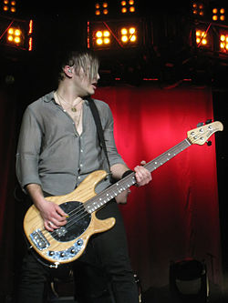
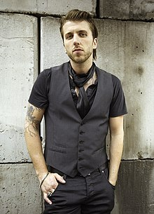

Three Days Grace es una banda de metal alternativo, los tres miembros de la banda comenzo con los integrantes Gontier, Walst y Sanderson, el nombre del grupo proviene de la pregunta "si tuvieras tres días para cambiar algo en tu vida, ¿qué sería?"
Donde el vocalista Adam Gontier desarrollo adiccion a la Oxicodona un medicamento para calmar el dolor y escribio sobre como se sintio durante su desintoxicación
Como curiosidad se hizo un documental llamado "Behind The Pain" sobre la experiencia del vocalita
Este álbum refleja la madurez de los miembros de la banda al superar problemas tales como la enfermedad y muerte dentro de sus familias, a lo que la banda declaró: «Teníamos que inspirarnos en ello, pero este es el resultado, es un nuevo comienzo, «la vida ahora empieza de nuevo» el tema central del álbum es en torno a «una nueva sensación de frescura» y la idea de que «no tienes que estancarte en lo que sea que estás haciendo. Ya sea bueno o malo, es tu elección para hacer un cambio»
En mi opinión es el mejor album manteniendo el estilo de muestra de dolor del anterior pero con un tono de redención que te anima
El 5 de junio de 2012 a las 9:00 A.M. GMT, el mismo día del tránsito visible de Venus a través del Sol, Three Days Grace anunció que su quinto álbum de estudio se llamaría Transit of Venus con la tematica y eslogan «Hay cosas que nunca volverán a suceder en tu vida»
Curiosamente en 2013 poco antes de una gira el vocalista dejaria el grupo para siempre, convirtiendo los conciertos en una cosa que no volveria a suceder, realmente me duele saber que aunque fuese a un concierto no podre escuchar las mismas canciones que escucho en mis cascos, él continuo su carrera como solista y actualmente se encuentra en su nueva banda llamada Saint Asonia
Despues de la salida del vocalista entro su reemplazo temporal que se acabo conviertiendo en su vocalista actual, Matt Walst y con el entro un nuevo estilo mas pesado y agresivo que dio un ambiente fresco al grupo
Como es de esperar despues del cambio de vocalista la crítica fue dispar, por un lado habían críticas positivas y el álbum debuto como número 2 en canadá mientras que otras críticas las categorizaban como un grupo de adultos con mentalidad de adolescentes o insistian en la falta del antiguo vocalista
Es el último disco que han sacado el grupo en la actualidad, en cuanto a la tematica Sanderson afirmó: "Creo que hay un hilo común que habla de cómo navegar a través de la vida moderna y ser bombardeado por la información y los sentimientos y creencias ... No tenemos todas las respuestas aquí, pero definitivamente sacamos el tema mucho"
Actualmente el grupo se encuentra en gira y bastante activo, para ver información de ello os dejo la pagina oficial del grupo

